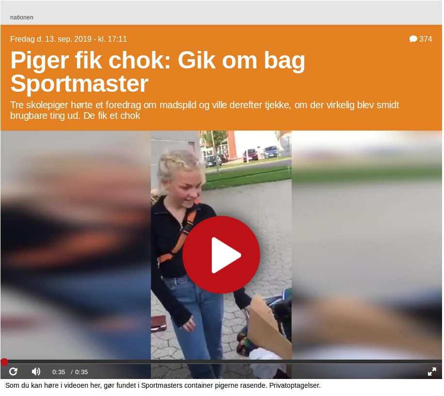

Unges politiske udtryk
8. oktober 2019
Intro til mit projekt
Overordnet spørgsmål
Hvordan kan man forstå det politiske som en del af de unges livsverden, og hvilken rolle kan det ungdoms- og fritidspædagogiske felt spille i forhold til at videreudvikle politiske ansatser blandt unge?
Forskningsspørgsmål
- Hvilke muligheder for medborgerlig læring skaber rammerne for det ungdoms- og fritidspædagogiske felt?
- Hvordan kommer det politiske til udtryk i de unges livsverden i et kontinuum mellem det latent-politiske og manifest-politiske?
- Hvorvidt kan unges kritikker og drømme relateret til deres livsverden bringes ind i en offentlighed i medborgerlige læringsprocesser?

At iagttage unges politiske udtryk
Faldgruber i iagttagelsen af unges politiske udtryk

Et kontinuum over det politiske

Eksempel


Det politiske i forskellige ungdomsfællesskaber

Unge, klima og pædagogik
Hvor meget fylder klimaspørgsmålet blandt unge?
Top 10 over udvalgte mærkesager fra Skolevalget 2019
Genbrugstøj - ikke kun et spørgsmål om bæredygtighed
Der er også rigtig mange af mine veninder, der har den samme sådan interesse om det som mig. Jeg synes bare det er fedt, det der med, at man kan få det til så meget billigere priser, og det er så bare er lidt brugt af nogle andre, så det har lidt en historie. Og så de penge, man giver, det går til et godt formål. Og så er det sådan nogle søde damer, der arbejder dernede. Og ja… jeg synes bare, at det er et virkelig fedt koncept det der.
Madspild - også et spørgsmål om økonomi
Det er ikke så meget økologi. Mest fordi det oftes er dyrere. Og vi har ikke sådan virkelig virkelig mange penge. Og så nogle gange, når vi også laver andet, så er det jo sådan, hvad skal vi spise i dag? Nå ok, vi spiser rester fra i går. For det kan vi jo ligså så godt. Og jeg er faktisk rigtig meget imod madspild for det meste. Jeg synes det er synd at smide mad ud, som sagtens kunne spises.
Nogle refleksioner/hypoteser om klimaaktivisme
- Vi skal være forsigtige med en generalisering om "den klimaaktivistiske ungdom".
- Klimakampen er stadig primært latent-politik blandt unge, men er på vej til at blive manifest-politisk.
- Klimakampen har givet de unge en sag, der hænger sammen med deres verden - både i lille og stor forstand. Hvad havde unge i 90'erne og 00'erne at kæmpe for?
Et indspark fra Hannah Arendt
Our hope always hangs on the new which every generation brings; but precisely because we can base our hope only on this, we destroy everything if we so try to control the new that we, the old, can dictate how it will look. Exactly for the sake of what is new and revolutionary in every child, education must be conservative; it must preserve this newness and introduce it as a new thing into an old world […].
Hannah Arendt, 1961
